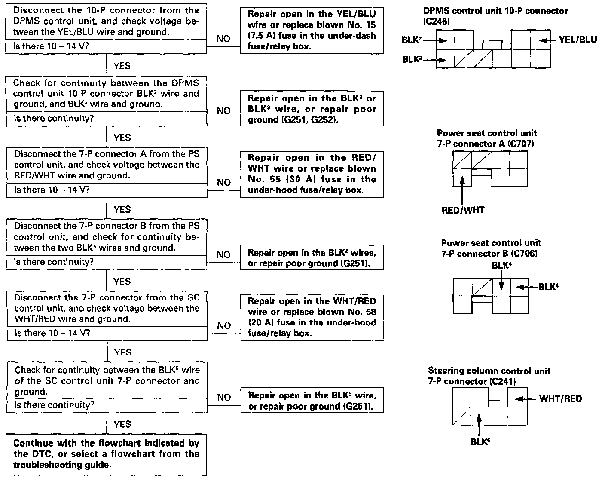

Pre-Troubleshooting Tests - Driving Position Memory System (DPMS)

PRE-TROUBLESHOOTING TESTS
Before troubleshooting the DTC(s) indicated by the LEDs in the position buttons of the memory switch, or before selecting a flowchart from the troubleshooting guide, perform the tests above to check power and ground.
NOTE:
- Make all voltage checks in the flowcharts (except those in the tests below) with the connectors connected.
- Make all continuity checks in the flowcharts with the connectors disconnected.
- Be careful not to cause shorts or damage wire insulation when back-probing.
- In the flowcharts, "DPMS control unit" stands for "driving position memory system control unit", "PS control unit" stands for "power seat control unit", and "SC control unit" stands for "steering column control unit".
- All connector views in the flowcharts are from the wire side.